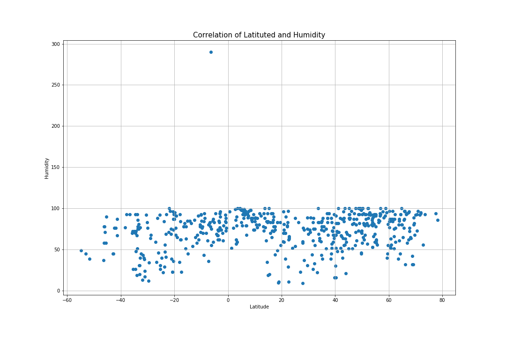

This
plot analyses the difference in humidity levels across the different humidity lines. Looking at the
plot, there seems to be little to no correlation with latitude lines and humidity; the majority of the
humidity is in the 50 to 100 range with a few outliers below that range and only one above that range
(approximately 290). There is a slightly more constant accumulation of humidity levels at 100 near the
equator mark, suggesting that the humidity levels are constant at that latitude position. This
accumulation can be seen to a lesser and broader extent in the northern latitude positions. However all
this data is still very dispersed; we cannot safely make any assumption about these correlates.